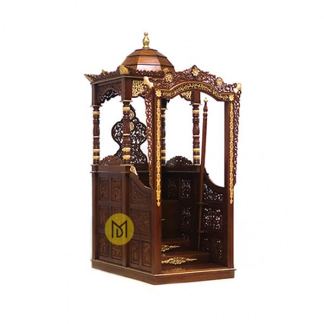

Tampak Depan
Taman Masjid Kubah Emas Dian Al Mahri dibuat dengan sangat baik untuk menciptakan lingkungan masjid yang asri. Taman masjid akan memberikan kesejukan dan keindahan sehingga jamaah yang sedang melaksanakan ibadah akan lebih kusyuk. Taman masjid yang berbentuk kluster-kluster menciptakan pemandangan yang berbeda-beda tiap sudutnya sehingga konsep taman modern ini akan sangat bagus menjadi spot dalam pengambilan gambar.

Mimbar Masjid
Mimbar merupakan komponen dari masjid yang digunakan sebagai tempat imam memberikan khotbah Jumat. Keberadaaan mimbar merupakan komponen tetap yang harus selalu ada pada masjid. Pada beberapa masjid, mimbar biasanya dibuat lebih tinggi (bertingkat) dari lantai masjid untuk memudahkan para jamaah melihat dan mendengarkan khotib berkutbah4. Seringkali juga dilengkapi dengan penutup di bagian atas.
Posisi mimbar atau tempat yang tinggi untuk khutbah berada di sebelah kanan mihrab jika dilihat dengan menghadap kiblat.
Namun, tidak hanya itu, mimbar juga dapat dibuat dari berbagai bahan, seperti kayu jati, batu, atau kayu jati dengan beberapa ukiran yang berfungsi sebagai hiasan
